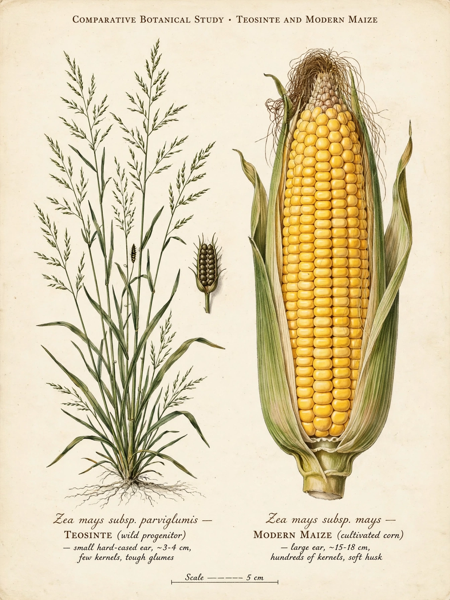

Teosinte is the common name for a group of tall annual grasses in the genus Zea, native to Mexico and Central America. Teosintes are the wild ancestors of modern maize (corn); the domesticated crop derives primarily from Zea mays subsp. parviglumis, which grows in the Balsas River valley of southwestern Mexico. The word teosinte derives from the Nahuatl teocintli, meaning "sacred corn-like plant".

| Teosinte | |
|---|---|
| Kingdom | Plantae |
| Order | Poales |
| Family | Poaceae |
| Genus | Zea |
| Species | Z. diploperennis, Z. luxurians, Z. nicaraguensis, Z. perennis, and subspecies of Z. mays |
Teosinte plants closely resemble maize in their vegetative form, with tall stalks and long leaves, and they are monoecious, bearing separate male tassels and female ears. The resemblance ends at the ear: a teosinte ear is tiny — only a few centimetres long — and bears just 5 to 12 kernels, each sealed inside an extremely hard fruitcase formed from a modified glume. These cases protect the seed but make the grain nearly inaccessible without cracking, a key difference from the soft, exposed kernels of domesticated maize.
For much of the twentieth century the origin of maize was debated; botanist George Beadle championed the hypothesis that maize was domesticated directly from teosinte, despite the dramatic difference in ear structure. Genetic work in the 1990s and 2000s confirmed Beadle's view: maize and teosinte are genetically very close, freely interfertile, and their differences trace largely to changes at a handful of genes, including tb1 (teosinte branched1), which controls branching, and tga1 (teosinte glume architecture1), which softened the kernel case. Archaeological and genetic evidence places domestication around 9,000 years ago in the Balsas valley.
Teosintes grow wild in Mexico, Guatemala, Honduras and Nicaragua, from sea level to highland terraces. Several taxa are rare or threatened by habitat loss and by gene flow from cultivated maize; Zea diploperennis, discovered in the Sierra de Manantlán of Jalisco in the 1970s, helped spur creation of a biosphere reserve there. Teosintes remain valuable to breeders as sources of disease resistance, flood tolerance and perenniality for improving the maize crop.
Maize · Domestication · Balsas River · George Beadle
From Wikipedia, the free encyclopedia.